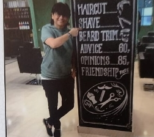
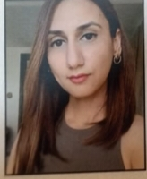

Our History-MIRACLE
MIRACLE Saloon is a pioneering beauty salon chain that was started by PURAN ABBAS FARID in Hyderabad.Today, Miracle Salon has spread to three outlets across the happening areas of the twin cities. It all grew from the dream of a young lady from iran into a story which has had a transformative effect on women across different generations.
Miracle started operations from humble beginnings in a tiny room in 1967 and from there it helped lay the foundation for many beauty Salons in India. Today, her daughter Fariyal Ali Murtazai and granddaughter Laila Murtazai have taken over the reins of making customers look their best. With the advent of technological improvements, the duo have brought in new and improved ways to take care of clients with a greater degree of specialization for specific needs.
Fariyal Ali Murtazai has an innate interest and passion towards grooming and has sought to find ways to bring out the inner beauty of people, with a little extra glow, be it with creams or a face pack.
 Amazingly, she even created these types of products at home using known ingredients and knowledge gained from her mother as well as her own personal experience over the years. Being a professional with a deep- rooted passion for her job, she understood that the client's happiness is undoubtedly the most important part and strived to achieve this. Many eminent personalities have placed their trust in Miracle Salon and visit frequently.
Fariyalhas been trained withVidal Sassoon - London, Saks - London and Tony & Guy - London and Singapore and makes frequent visits to these countries to upgrade her skills to bring in the latest trends in hair colour and cuts to Hyderabad.
Laila Murtazai-The most in-demand hairstylist with a loyal clientele who keep returning to Miracle Salon owing to Laila's innate creativity and focus on customer experience. She leverages her skills and knowledge gathered over 20 years to create high-fashion hairstyles and creative colours that are as unique as her clients. Trained extensively at Tony and Guy, Vidal Sassoon and many other reputed academies across the globe she specializes in colour correction, haircuts and makeup. With continuing education and upgrades through multiple hair courses/certifications every year, she helps her clients find a style that's unapologetically their own.
